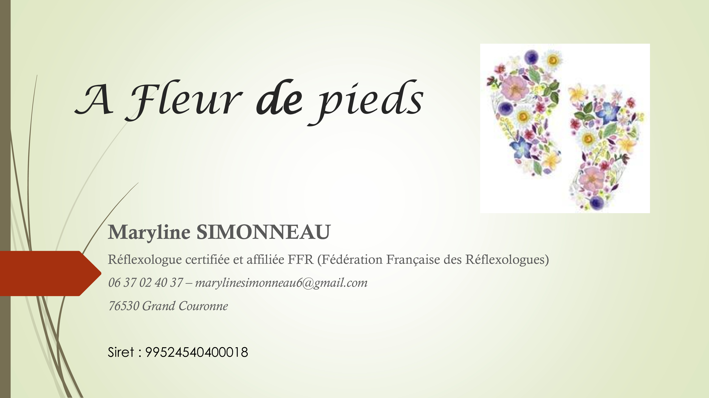

À propos
Maryline SIMONNEAU
Réflexologue certifiée depuis 2025, 20 ans d’expérience dans le soin et l’accompagnement à l’hôpital public.
Très naturellement, je me suis orientée vers la voie du bien-être. La réflexologie est apparue comme une évidence pour sa pratique non invasive et surtout pour une prise en compte de la personne dans sa globalité.
Adhérente professionnelle à la Fédération Française des Réflexologues.
